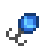
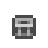
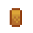
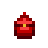
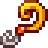

| Imagem |
Nome |
Descrição |
Notas |
Compra |
|  |
Anzol |
Sua forma a faz girar na água. Aumenta levemente as chances de pegar um peixe. |
Reduz o atraso máximo antes de uma mordida em 3.75 segundos |
500 ouros |
 |
Isca artificial |
A aba de metal e os feixes coloridos criam uma tentação fatal para os peixes. Aumenta a chance de mordida ao pescar. |
Reduz o atraso máximo antes de uma mordida em 7.5 segundos |
1000 ouros |
|  |
Boia-armadilha |
Faz com que os peixes escapem mais lentamente quando você não está içando a vara. |
A barra de "captura" diminui 66% mais lentamente. Este é um dos itens de anzol mais viáveis para usar, pois tem uma variedade de aplicações e um bônus muito bom. |
500 ouros |
|  |
Boia de cortiça |
Aumenta levemente o tamanho da sua "barra de pesca". |
O aumento de tamanho não é grande o suficiente para ser útil, em geral. O aumento real é um plano de 24 pixels, que é um aumento de 25% a 13,6%, dependendo do seu nível de pesca (sem buffs). |
750 ouros |
 |
Chumbo para isca |
Deixa a sua "barra de pesca" mais pesada, evitando que ela pule para o fundo. |
Isso não é muito útil, pois é bastante fácil evitar que a barra salte, clicando para desacelerá-la logo antes dela atingir o fundo. |
200 ouros |
|  |
Caça ao tesouro |
Peixes não escapam ao coletar tesouros. Também aumenta levemente as chances de encontrar um tesouro. |
Aumenta a chance de tesouro em 33% (20% em vez da base 15%). Ótimo para quando você está tentando coletar artefatos, ou simplesmente à procura de alguns materiais extras. |
750 ouros |
 |
Anzol farpado |
Prende sua pesca melhor, fazendo com que a "barra de pesca" fique presa a ela. Funciona melhor em peixes lentos e fracos. |
Este gancho fará sua barra de pesca "aderir" ao peixe, automaticamente indo para cima ou para baixo para tentar ficar no meio do peixe. Ele só vai tentar mover quando a barra está realmente sobre o peixe. Você ainda pode controlar manualmente a barra, mas é bastante difícil já que você precisa catapultar-se para fora do peixe porque a atração é muito forte. Este anzol é melhor usado contra peixes lentos e não é recomendado para usar contra peixes mais rápidos pois ele provavelmente vai deixar a captura mais difícil com os movimentos aleatórios da barra. |
1000 ouros |
|  |
Isca de Curiosidade |
Aumenta suas chances de pegar peixes raros. |
|
 500 ouros 500 ouros |